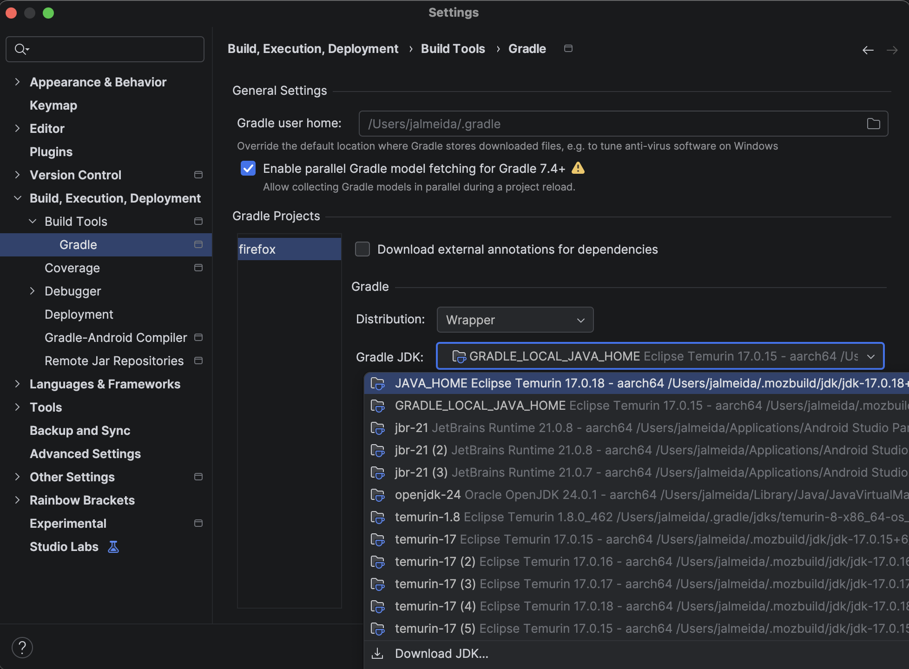
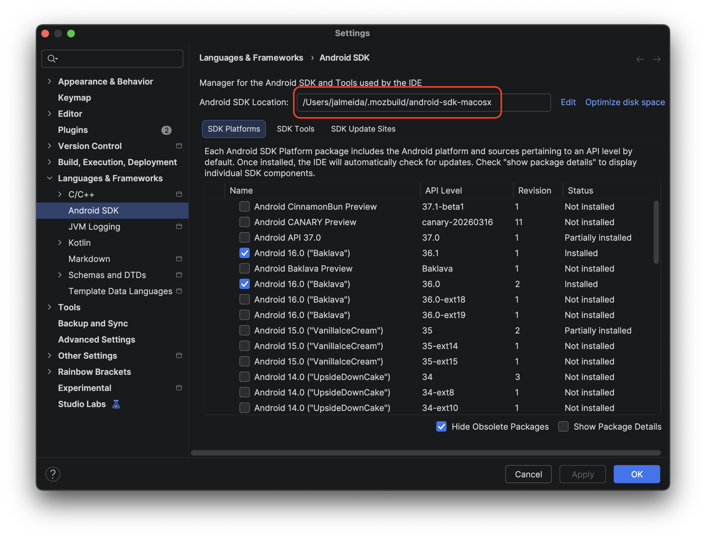

The Firefox for Android app has always had a complicated build process - we're cramping a complex cross-platform browser engine and all the related components that make it work on Android into one package. In its current form, it lives in the Firefox mono-repo at mozilla-central (now mozilla-firefox using the git repository).
I wanted to document my "artifact-mode" environment here since it's worked quite successfully for me for many years with minor changes.
NOTE: After a fresh clone of the mono-repo, don't forget to first run and follow the prompts of
./mach bootstrap.
mozconfig
My mozconfig below is enabled for artifact mode, but occasionally I switch between various configurations. You can see those commented out, with these few extra notes:
- I like to separate out my objdirs to avoid cache pollution between the different build types. I think you can get away without needing to specify this and an objdir for your build type and arch will be generated.
sccachespeeds up the native portion of full builds after the first slow one, but it's a hit or miss if you fetch from the remote repository but don't need to rebuild as often.- I don't care to manually run the clobber step, and I don't truly appreciate why that isn't always automatically done.
- Emilio's mozconfig manager looks like a better solution, however my needs are very simple.
# Build GeckoView/Firefox for Android:
ac_add_options --enable-application=mobile/android
# Targeting the following architecture.
# For regular phones, no --target is needed.
# For x86 emulators (and x86 devices, which are uncommon):
# ac_add_options --target=i686
# For newer phones or Apple silicon
ac_add_options --target=aarch64
# For x86_64 emulators (and x86_64 devices, which are even less common):
# ac_add_options --target=x86_64
# sccache will significantly speed up your builds by caching
# compilation results. The Firefox build system will download
# sccache automatically.
# This only works for non-artifact builds.
#ac_add_options --with-ccache=sccache
# Enable artifact builds; manager-mode.
ac_add_options --enable-artifact-builds
# Write build artifacts to..
## Full build dir
#mk_add_options MOZ_OBJDIR=./objdir-droid
#mk_add_options MOZ_OBJDIR=./objdir-desktop
## Artifact builds
mk_add_options MOZ_OBJDIR=./objdir-frontend
# Automatic clobbering; don't ask me.
mk_add_options AUTOCLOBBER=1
JAVA_HOME
Sometimes you might find yourself needing to run a (non-mach) command in the terminal. Those typically will need to invoke some parts of gradle for an Android build, so it's best to make sure those are using the same JDK as the bootstrapped one in the mono-repo. This avoids weird build errors where something that compiles in one place isn't working in another (like Android Studio).
The location for the JDKs are typically in ~/.mozbuild/jdk/, and if you've between around for ~6 months you end up with multiple versions after every JDK bump:
$ ls -l ~/.mozbuild/jdk/
drwxr-xr-x@ - jalmeida 15 Apr 2025 jdk-17.0.15+6
drwxr-xr-x@ - jalmeida 15 Jul 2025 jdk-17.0.16+8
drwxr-xr-x@ - jalmeida 21 Oct 2025 jdk-17.0.17+10
drwxr-xr-x@ - jalmeida 20 Jan 09:00 jdk-17.0.18+8
drwxr-xr-x@ - jalmeida 26 Feb 15:04 mozboot
You can find some way to point your latest JDK to one location or you can be lazy like me and pick the latest version to assign as your JAVA_HOME property by adding this to your shell's RC file:
export JAVA_HOME="$(ls -1dr -- $HOME/.mozbuild/jdk/jdk-* | head -n 1)/Contents/Home"
Android Studio
Similarly for Android Studio, let's do the same so that environment is identical. Head to, Settings | Build, Execution, Deployment | Build Tools | Gradle, and ensure that "Gradle JDK" path is set to JAVA_HOME.
Lately, the default seems to be for it to follow GRADLE_LOCAL_JAVA_HOME which is a property we can't easily override, so we have to manually set this ourselves.

Using the same Android SDK also helps speed things up and avoids source confusion. You can typically find it in ~/.mozbuild/android-sdk-macosx and update it at Settings | Languages & Frameworks | Android SDK.

Debugging
This section is for miscellaneous build error situations that come-up, but assuming mach build work and there are no known Android build changes, my solution has typically always been the same.
For example, the other day I fetched another engineers patch to test out locally1 as part of reviewing it where I faced the error message below:
Execution failed for task ':components:feature-pwa:compileDebugKotlin'.
FAILURE: Build failed with an exception.
* What went wrong:
Execution failed for task ':components:feature-pwa:compileDebugKotlin'.
> A failure occurred while executing org.jetbrains.kotlin.compilerRunner.GradleCompilerRunnerWithWorkers$GradleKotlinCompilerWorkAction
> Internal compiler error. See log for more details
* Try:
> Run with --info or --debug option to get more log output.
> Run with --scan to generate a Build Scan (powered by Develocity).
> Get more help at https://help.gradle.org.
* Exception is:
org.gradle.api.tasks.TaskExecutionException: Execution failed for task ':components:feature-pwa:compileDebugKotlin'.
at org.gradle.api.internal.tasks.execution.ExecuteActionsTaskExecuter.lambda$executeIfValid$1(ExecuteActionsTaskExecuter.java:135)
at org.gradle.internal.Try$Failure.ifSuccessfulOrElse(Try.java:288)
at org.gradle.api.internal.tasks.execution.ExecuteActionsTaskExecuter.executeIfValid(ExecuteActionsTaskExecuter.java:133)
at org.gradle.api.internal.tasks.execution.ExecuteActionsTaskExecuter.execute(ExecuteActionsTaskExecuter.java:121)
at org.gradle.api.internal.tasks.execution.ProblemsTaskPathTrackingTaskExecuter.execute(ProblemsTaskPathTrackingTaskExecuter.java:41)
at org.gradle.api.internal.tasks.execution.FinalizePropertiesTaskExecuter.execute(FinalizePropertiesTaskExecuter.java:46)
at org.gradle.api.internal.tasks.execution.ResolveTaskExecutionModeExecuter.execute(ResolveTaskExecutionModeExecuter.java:51)
at org.gradle.api.internal.tasks.execution.SkipTaskWithNoActionsExecuter.execute(SkipTaskWithNoActionsExecuter.java:57)
at org.gradle.api.internal.tasks.execution.SkipOnlyIfTaskExecuter.execute(SkipOnlyIfTaskExecuter.java:74)
at org.gradle.api.internal.tasks.execution.CatchExceptionTaskExecuter.execute(CatchExceptionTaskExecuter.java:36)
at org.gradle.api.internal.tasks.execution.EventFiringTaskExecuter$1.executeTask(EventFiringTaskExecuter.java:77)
at org.gradle.api.internal.tasks.execution.EventFiringTaskExecuter$1.call(EventFiringTaskExecuter.java:55)
at org.gradle.api.internal.tasks.execution.EventFiringTaskExecuter$1.call(EventFiringTaskExecuter.java:52)
at org.gradle.internal.operations.DefaultBuildOperationRunner$CallableBuildOperationWorker.execute(DefaultBuildOperationRunner.java:209)
at org.gradle.internal.operations.DefaultBuildOperationRunner$CallableBuildOperationWorker.execute(DefaultBuildOperationRunner.java:204)
at org.gradle.internal.operations.DefaultBuildOperationRunner$2.execute(DefaultBuildOperationRunner.java:66)
at org.gradle.internal.operations.DefaultBuildOperationRunner$2.execute(DefaultBuildOperationRunner.java:59)
at org.gradle.internal.operations.DefaultBuildOperationRunner.execute(DefaultBuildOperationRunner.java:166)
at org.gradle.internal.operations.DefaultBuildOperationRunner.execute(DefaultBuildOperationRunner.java:59)
at org.gradle.internal.operations.DefaultBuildOperationRunner.call(DefaultBuildOperationRunner.java:53)
at org.gradle.api.internal.tasks.execution.EventFiringTaskExecuter.execute(EventFiringTaskExecuter.java:52)
at org.gradle.execution.plan.DefaultNodeExecutor.executeLocalTaskNode(DefaultNodeExecutor.java:55)
at org.gradle.execution.plan.DefaultNodeExecutor.execute(DefaultNodeExecutor.java:34)
at org.gradle.execution.taskgraph.DefaultTaskExecutionGraph$InvokeNodeExecutorsAction.execute(DefaultTaskExecutionGraph.java:355)
at org.gradle.execution.taskgraph.DefaultTaskExecutionGraph$InvokeNodeExecutorsAction.execute(DefaultTaskExecutionGraph.java:343)
at org.gradle.execution.taskgraph.DefaultTaskExecutionGraph$BuildOperationAwareExecutionAction.lambda$execute$0(DefaultTaskExecutionGraph.java:339)
at org.gradle.internal.operations.CurrentBuildOperationRef.with(CurrentBuildOperationRef.java:84)
at org.gradle.execution.taskgraph.DefaultTaskExecutionGraph$BuildOperationAwareExecutionAction.execute(DefaultTaskExecutionGraph.java:339)
at org.gradle.execution.taskgraph.DefaultTaskExecutionGraph$BuildOperationAwareExecutionAction.execute(DefaultTaskExecutionGraph.java:328)
at org.gradle.execution.plan.DefaultPlanExecutor$ExecutorWorker.execute(DefaultPlanExecutor.java:459)
at org.gradle.execution.plan.DefaultPlanExecutor$ExecutorWorker.run(DefaultPlanExecutor.java:376)
at org.gradle.internal.concurrent.ExecutorPolicy$CatchAndRecordFailures.onExecute(ExecutorPolicy.java:64)
at org.gradle.internal.concurrent.AbstractManagedExecutor$1.run(AbstractManagedExecutor.java:47)
Caused by: org.gradle.workers.internal.DefaultWorkerExecutor$WorkExecutionException: A failure occurred while executing org.jetbrains.kotlin.compilerRunner.GradleCompilerRunnerWithWorkers$GradleKotlinCompilerWorkAction
at org.gradle.workers.internal.DefaultWorkerExecutor$WorkItemExecution.waitForCompletion(DefaultWorkerExecutor.java:289)
at org.gradle.internal.work.DefaultAsyncWorkTracker.lambda$waitForItemsAndGatherFailures$2(DefaultAsyncWorkTracker.java:130)
at org.gradle.internal.Factories$1.create(Factories.java:33)
at org.gradle.internal.work.DefaultWorkerLeaseService.lambda$withoutLocks$2(DefaultWorkerLeaseService.java:344)
at org.gradle.internal.work.ResourceLockStatistics$1.measure(ResourceLockStatistics.java:42)
at org.gradle.internal.work.DefaultWorkerLeaseService.withoutLocks(DefaultWorkerLeaseService.java:342)
at org.gradle.internal.work.DefaultWorkerLeaseService.withoutLocks(DefaultWorkerLeaseService.java:326)
at org.gradle.internal.work.DefaultWorkerLeaseService.withoutLock(DefaultWorkerLeaseService.java:331)
at org.gradle.internal.work.DefaultAsyncWorkTracker.waitForItemsAndGatherFailures(DefaultAsyncWorkTracker.java:126)
at org.gradle.internal.work.DefaultAsyncWorkTracker.waitForItemsAndGatherFailures(DefaultAsyncWorkTracker.java:92)
at org.gradle.internal.work.DefaultAsyncWorkTracker.waitForAll(DefaultAsyncWorkTracker.java:78)
at org.gradle.internal.work.DefaultAsyncWorkTracker.waitForCompletion(DefaultAsyncWorkTracker.java:66)
at org.gradle.api.internal.tasks.execution.TaskExecution$3.run(TaskExecution.java:260)
at org.gradle.internal.operations.DefaultBuildOperationRunner$1.execute(DefaultBuildOperationRunner.java:29)
at org.gradle.internal.operations.DefaultBuildOperationRunner$1.execute(DefaultBuildOperationRunner.java:26)
at org.gradle.internal.operations.DefaultBuildOperationRunner$2.execute(DefaultBuildOperationRunner.java:66)
at org.gradle.internal.operations.DefaultBuildOperationRunner$2.execute(DefaultBuildOperationRunner.java:59)
at org.gradle.internal.operations.DefaultBuildOperationRunner.execute(DefaultBuildOperationRunner.java:166)
at org.gradle.internal.operations.DefaultBuildOperationRunner.execute(DefaultBuildOperationRunner.java:59)
at org.gradle.internal.operations.DefaultBuildOperationRunner.run(DefaultBuildOperationRunner.java:47)
at org.gradle.api.internal.tasks.execution.TaskExecution.executeAction(TaskExecution.java:237)
at org.gradle.api.internal.tasks.execution.TaskExecution.executeActions(TaskExecution.java:220)
at org.gradle.api.internal.tasks.execution.TaskExecution.executeWithPreviousOutputFiles(TaskExecution.java:203)
at org.gradle.api.internal.tasks.execution.TaskExecution.execute(TaskExecution.java:170)
at org.gradle.internal.execution.steps.ExecuteStep.executeInternal(ExecuteStep.java:105)
at org.gradle.internal.execution.steps.ExecuteStep.access$000(ExecuteStep.java:44)
at org.gradle.internal.execution.steps.ExecuteStep$1.call(ExecuteStep.java:59)
at org.gradle.internal.execution.steps.ExecuteStep$1.call(ExecuteStep.java:56)
at org.gradle.internal.operations.DefaultBuildOperationRunner$CallableBuildOperationWorker.execute(DefaultBuildOperationRunner.java:209)
at org.gradle.internal.operations.DefaultBuildOperationRunner$CallableBuildOperationWorker.execute(DefaultBuildOperationRunner.java:204)
at org.gradle.internal.operations.DefaultBuildOperationRunner$2.execute(DefaultBuildOperationRunner.java:66)
at org.gradle.internal.operations.DefaultBuildOperationRunner$2.execute(DefaultBuildOperationRunner.java:59)
at org.gradle.internal.operations.DefaultBuildOperationRunner.execute(DefaultBuildOperationRunner.java:166)
at org.gradle.internal.operations.DefaultBuildOperationRunner.execute(DefaultBuildOperationRunner.java:59)
at org.gradle.internal.operations.DefaultBuildOperationRunner.call(DefaultBuildOperationRunner.java:53)
at org.gradle.internal.execution.steps.ExecuteStep.execute(ExecuteStep.java:56)
at org.gradle.internal.execution.steps.ExecuteStep.execute(ExecuteStep.java:44)
at org.gradle.internal.execution.steps.CancelExecutionStep.execute(CancelExecutionStep.java:42)
at org.gradle.internal.execution.steps.TimeoutStep.executeWithoutTimeout(TimeoutStep.java:75)
at org.gradle.internal.execution.steps.TimeoutStep.execute(TimeoutStep.java:55)
at org.gradle.internal.execution.steps.PreCreateOutputParentsStep.execute(PreCreateOutputParentsStep.java:50)
at org.gradle.internal.execution.steps.PreCreateOutputParentsStep.execute(PreCreateOutputParentsStep.java:28)
at org.gradle.internal.execution.steps.RemovePreviousOutputsStep.execute(RemovePreviousOutputsStep.java:68)
at org.gradle.internal.execution.steps.RemovePreviousOutputsStep.execute(RemovePreviousOutputsStep.java:38)
at org.gradle.internal.execution.steps.BroadcastChangingOutputsStep.execute(BroadcastChangingOutputsStep.java:61)
at org.gradle.internal.execution.steps.BroadcastChangingOutputsStep.execute(BroadcastChangingOutputsStep.java:26)
at org.gradle.internal.execution.steps.CaptureOutputsAfterExecutionStep.execute(CaptureOutputsAfterExecutionStep.java:69)
at org.gradle.internal.execution.steps.CaptureOutputsAfterExecutionStep.execute(CaptureOutputsAfterExecutionStep.java:46)
at org.gradle.internal.execution.steps.ResolveInputChangesStep.execute(ResolveInputChangesStep.java:39)
at org.gradle.internal.execution.steps.ResolveInputChangesStep.execute(ResolveInputChangesStep.java:28)
at org.gradle.internal.execution.steps.BuildCacheStep.executeWithoutCache(BuildCacheStep.java:189)
at org.gradle.internal.execution.steps.BuildCacheStep.lambda$execute$1(BuildCacheStep.java:75)
at org.gradle.internal.Either$Right.fold(Either.java:176)
at org.gradle.internal.execution.caching.CachingState.fold(CachingState.java:62)
at org.gradle.internal.execution.steps.BuildCacheStep.execute(BuildCacheStep.java:73)
at org.gradle.internal.execution.steps.BuildCacheStep.execute(BuildCacheStep.java:48)
at org.gradle.internal.execution.steps.StoreExecutionStateStep.execute(StoreExecutionStateStep.java:46)
at org.gradle.internal.execution.steps.StoreExecutionStateStep.execute(StoreExecutionStateStep.java:35)
at org.gradle.internal.execution.steps.SkipUpToDateStep.executeBecause(SkipUpToDateStep.java:75)
at org.gradle.internal.execution.steps.SkipUpToDateStep.lambda$execute$2(SkipUpToDateStep.java:53)
at org.gradle.internal.execution.steps.SkipUpToDateStep.execute(SkipUpToDateStep.java:53)
at org.gradle.internal.execution.steps.SkipUpToDateStep.execute(SkipUpToDateStep.java:35)
at org.gradle.internal.execution.steps.legacy.MarkSnapshottingInputsFinishedStep.execute(MarkSnapshottingInputsFinishedStep.java:37)
at org.gradle.internal.execution.steps.legacy.MarkSnapshottingInputsFinishedStep.execute(MarkSnapshottingInputsFinishedStep.java:27)
at org.gradle.internal.execution.steps.ResolveIncrementalCachingStateStep.executeDelegate(ResolveIncrementalCachingStateStep.java:49)
at org.gradle.internal.execution.steps.ResolveIncrementalCachingStateStep.executeDelegate(ResolveIncrementalCachingStateStep.java:27)
at org.gradle.internal.execution.steps.AbstractResolveCachingStateStep.execute(AbstractResolveCachingStateStep.java:71)
at org.gradle.internal.execution.steps.AbstractResolveCachingStateStep.execute(AbstractResolveCachingStateStep.java:39)
at org.gradle.internal.execution.steps.ResolveChangesStep.execute(ResolveChangesStep.java:64)
at org.gradle.internal.execution.steps.ResolveChangesStep.execute(ResolveChangesStep.java:35)
at org.gradle.internal.execution.steps.ValidateStep.execute(ValidateStep.java:62)
at org.gradle.internal.execution.steps.ValidateStep.execute(ValidateStep.java:40)
at org.gradle.internal.execution.steps.AbstractCaptureStateBeforeExecutionStep.execute(AbstractCaptureStateBeforeExecutionStep.java:76)
at org.gradle.internal.execution.steps.AbstractCaptureStateBeforeExecutionStep.execute(AbstractCaptureStateBeforeExecutionStep.java:45)
at org.gradle.internal.execution.steps.AbstractSkipEmptyWorkStep.executeWithNonEmptySources(AbstractSkipEmptyWorkStep.java:136)
at org.gradle.internal.execution.steps.AbstractSkipEmptyWorkStep.execute(AbstractSkipEmptyWorkStep.java:66)
at org.gradle.internal.execution.steps.AbstractSkipEmptyWorkStep.execute(AbstractSkipEmptyWorkStep.java:38)
at org.gradle.internal.execution.steps.legacy.MarkSnapshottingInputsStartedStep.execute(MarkSnapshottingInputsStartedStep.java:38)
at org.gradle.internal.execution.steps.LoadPreviousExecutionStateStep.execute(LoadPreviousExecutionStateStep.java:36)
at org.gradle.internal.execution.steps.LoadPreviousExecutionStateStep.execute(LoadPreviousExecutionStateStep.java:23)
at org.gradle.internal.execution.steps.HandleStaleOutputsStep.execute(HandleStaleOutputsStep.java:75)
at org.gradle.internal.execution.steps.HandleStaleOutputsStep.execute(HandleStaleOutputsStep.java:41)
at org.gradle.internal.execution.steps.AssignMutableWorkspaceStep.lambda$execute$0(AssignMutableWorkspaceStep.java:35)
at org.gradle.api.internal.tasks.execution.TaskExecution$4.withWorkspace(TaskExecution.java:297)
at org.gradle.internal.execution.steps.AssignMutableWorkspaceStep.execute(AssignMutableWorkspaceStep.java:31)
at org.gradle.internal.execution.steps.AssignMutableWorkspaceStep.execute(AssignMutableWorkspaceStep.java:22)
at org.gradle.internal.execution.steps.ChoosePipelineStep.execute(ChoosePipelineStep.java:40)
at org.gradle.internal.execution.steps.ChoosePipelineStep.execute(ChoosePipelineStep.java:23)
at org.gradle.internal.execution.steps.ExecuteWorkBuildOperationFiringStep.lambda$execute$2(ExecuteWorkBuildOperationFiringStep.java:67)
at org.gradle.internal.execution.steps.ExecuteWorkBuildOperationFiringStep.execute(ExecuteWorkBuildOperationFiringStep.java:67)
at org.gradle.internal.execution.steps.ExecuteWorkBuildOperationFiringStep.execute(ExecuteWorkBuildOperationFiringStep.java:39)
at org.gradle.internal.execution.steps.IdentityCacheStep.execute(IdentityCacheStep.java:46)
at org.gradle.internal.execution.steps.IdentityCacheStep.execute(IdentityCacheStep.java:34)
at org.gradle.internal.execution.steps.IdentifyStep.execute(IdentifyStep.java:44)
at org.gradle.internal.execution.steps.IdentifyStep.execute(IdentifyStep.java:31)
at org.gradle.internal.execution.impl.DefaultExecutionEngine$1.execute(DefaultExecutionEngine.java:64)
at org.gradle.api.internal.tasks.execution.ExecuteActionsTaskExecuter.executeIfValid(ExecuteActionsTaskExecuter.java:132)
... 30 more
Caused by: org.jetbrains.kotlin.gradle.tasks.FailedCompilationException: Internal compiler error. See log for more details
at org.jetbrains.kotlin.gradle.tasks.TasksUtilsKt.throwExceptionIfCompilationFailed(tasksUtils.kt:22)
at org.jetbrains.kotlin.compilerRunner.GradleKotlinCompilerWork.run(GradleKotlinCompilerWork.kt:112)
at org.jetbrains.kotlin.compilerRunner.GradleCompilerRunnerWithWorkers$GradleKotlinCompilerWorkAction.execute(GradleCompilerRunnerWithWorkers.kt:75)
at org.gradle.workers.internal.DefaultWorkerServer.execute(DefaultWorkerServer.java:68)
at org.gradle.workers.internal.NoIsolationWorkerFactory$1$1.create(NoIsolationWorkerFactory.java:64)
at org.gradle.workers.internal.NoIsolationWorkerFactory$1$1.create(NoIsolationWorkerFactory.java:61)
at org.gradle.internal.classloader.ClassLoaderUtils.executeInClassloader(ClassLoaderUtils.java:100)
at org.gradle.workers.internal.NoIsolationWorkerFactory$1.lambda$execute$0(NoIsolationWorkerFactory.java:61)
at org.gradle.workers.internal.AbstractWorker$1.call(AbstractWorker.java:44)
at org.gradle.workers.internal.AbstractWorker$1.call(AbstractWorker.java:41)
at org.gradle.internal.operations.DefaultBuildOperationRunner$CallableBuildOperationWorker.execute(DefaultBuildOperationRunner.java:209)
at org.gradle.internal.operations.DefaultBuildOperationRunner$CallableBuildOperationWorker.execute(DefaultBuildOperationRunner.java:204)
at org.gradle.internal.operations.DefaultBuildOperationRunner$2.execute(DefaultBuildOperationRunner.java:66)
at org.gradle.internal.operations.DefaultBuildOperationRunner$2.execute(DefaultBuildOperationRunner.java:59)
at org.gradle.internal.operations.DefaultBuildOperationRunner.execute(DefaultBuildOperationRunner.java:166)
at org.gradle.internal.operations.DefaultBuildOperationRunner.execute(DefaultBuildOperationRunner.java:59)
at org.gradle.internal.operations.DefaultBuildOperationRunner.call(DefaultBuildOperationRunner.java:53)
at org.gradle.workers.internal.AbstractWorker.executeWrappedInBuildOperation(AbstractWorker.java:41)
at org.gradle.workers.internal.NoIsolationWorkerFactory$1.execute(NoIsolationWorkerFactory.java:58)
at org.gradle.workers.internal.DefaultWorkerExecutor.lambda$submitWork$0(DefaultWorkerExecutor.java:176)
at org.gradle.internal.work.DefaultConditionalExecutionQueue$ExecutionRunner.runExecution(DefaultConditionalExecutionQueue.java:194)
at org.gradle.internal.work.DefaultConditionalExecutionQueue$ExecutionRunner.access$700(DefaultConditionalExecutionQueue.java:127)
at org.gradle.internal.work.DefaultConditionalExecutionQueue$ExecutionRunner$1.run(DefaultConditionalExecutionQueue.java:169)
at org.gradle.internal.Factories$1.create(Factories.java:33)
at org.gradle.internal.work.DefaultWorkerLeaseService.lambda$withLocksAcquired$0(DefaultWorkerLeaseService.java:269)
at org.gradle.internal.work.ResourceLockStatistics$1.measure(ResourceLockStatistics.java:42)
at org.gradle.internal.work.DefaultWorkerLeaseService.withLocksAcquired(DefaultWorkerLeaseService.java:267)
at org.gradle.internal.work.DefaultWorkerLeaseService.withLocks(DefaultWorkerLeaseService.java:259)
at org.gradle.internal.work.DefaultWorkerLeaseService.runAsWorkerThread(DefaultWorkerLeaseService.java:127)
at org.gradle.internal.work.DefaultWorkerLeaseService.runAsWorkerThread(DefaultWorkerLeaseService.java:132)
at org.gradle.internal.work.DefaultConditionalExecutionQueue$ExecutionRunner.runBatch(DefaultConditionalExecutionQueue.java:164)
at org.gradle.internal.work.DefaultConditionalExecutionQueue$ExecutionRunner.run(DefaultConditionalExecutionQueue.java:133)
... 2 more
The full trace was long and didn't seem related to a code failure in the module itself. So I employed the solution, which is always the same:
./mach build- In Android Studio, File > Sync Project with Gradle Files.
Yup, that's all. Very simple and boring.
With Jujutsu, this is the moz-phab command I use which has made it easier to manage review patches: moz-phab patch <patch-id> --no-branch --apply-to main@origin
Comments
With an account on the Fediverse or Mastodon, you can respond to this post. Since Mastodon is decentralized, you can use your existing account hosted by another Mastodon server or compatible platform if you don't have an account on this one. Known non-private replies are displayed below.
Learn how this was implemented from the original source here.